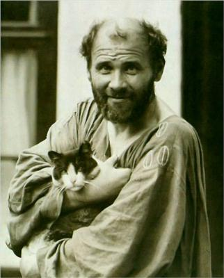
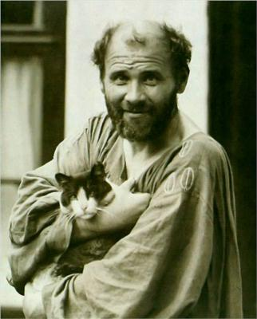
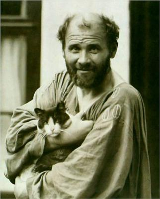
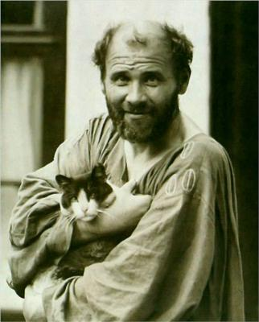

Autor: Gustav Klimt
Data: 1907-1908
Técnica: Óleo sobre tela com folhas de
ouro
Dimensões: 180 x 180 centímetros
Localização: Österreichische Galerie Belvedere, Viena,
Áustria
Gustav Klimt é conhecido por seu estilo distintivo, que mistura simbolismo com Art Nouveau. Muitas de suas obras são reconhecíveis pelo uso profuso de folhas de ouro e padrões decorativos intrincados.A pintura em questão, provavelmente uma de suas mais conhecidas como "O Beijo" (1907-1908), é um exemplo perfeito dessa estética. O casal na pintura é envolto em um manto dourado, coberto por padrões geométricos e orgânicos que criam uma sensação de profundidade e textura. A ênfase na riqueza do ouro e na ornamentação destaca a sensualidade e a intimidade da cena, enquanto os corpos dos amantes são parcialmente ocultos e entrelaçados, criando uma sensação de união espiritual e física. Klimt explora temas de amor, sensualidade e conexão emocional em suas obras. Ele frequentemente utiliza a simbologia e o erotismo para transmitir uma profundidade emocional, refletindo as complexidades da experiência humana. O uso do dourado e dos padrões intricados não é apenas decorativo, mas serve para elevar a experiência visual e emocional do espectador, sugerindo uma transcendência da realidade física e uma conexão mais profunda entre os personagens. A obra pode ser vista como uma celebração do amor e da união, simbolizando a fusão dos corpos e das almas em um abraço eterno.